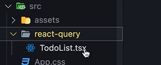
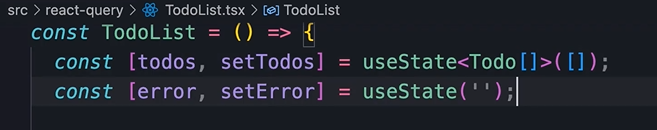
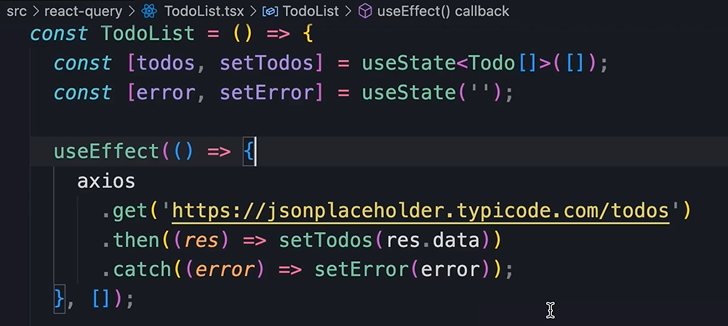

HOME
What is React Query
Let's begin
Let's begin in the playround starter, and open the todo-list component
in the react-query folder.

This is how we typically fetch data from the backend in react.
We use a couple of state hooks, one for data and another for errs...

Then we use the effect hook to fetch data from the backend and store
it in the state vars...

Implementation will vary from one project to to another, but that
aside, there are a number of problems with this implementation.
Problems with this implementation
The first problem is that we are not canceling the request if the
component is un-mounted.
We learned about this in the first part.
We learned that we use the effect hook to execute code that can have
side effects.
Sometimes, inside the function that we pass to the effect hook, we
should pass a cleanup function to undo what we did before.
💡 In the case of HTTP requests, we should cancel them.
This is especially important in React-18, because by default the
strict mode is enabled which causes each component to be rendered
twice.
This means that if you dont cancel the request we will end up fetching
the data twice.
Second problem
The nexpt problem is that there is
no separation of concerns.
The querying logic is leaked into the component.
If somewhere else we need the same piece of data we have to duplicate
the logic. Boo.
No modularity, non-reusable. Ewww.
To address this we need to extract this logic and encapulate it inside
of a hook.
Third Problem
We are not retrying failed requests.
If there is an err we show a message and move on.
Horrible.
Fourth problem
Also we have no automatic refresh.
So if the data changes while the user is on the page they won't see
the changes unless they refresh.
Caching
Not having caching is also a problem, it makes the app much slower.
Caching: The process of storing data in a
place where it can be accessed more quickly and efficiently in the
future.
In react apps we can store frequently used data on the client(meaning
inside the users browser), so we don't have to fetch it from the
server everytime it's needed.
The list of problems
- No request cancellation
- No separation of concerns
- No retries
- No automatic refresh
- No caching
We could address all these limitations by writing more and more code,
but thats just more code to maintain.
This is where React Query comes in to save the day
It's a powerful library for managing data fetching, and caching in
React applications.
Redux
Alot of people use Redux for caching.
Redux: a popular state management library
for JavaScript applications.
Redux allows us to store the state or data of an application in a
single, global store.
All the store is, is a JavaScript object in the users browser. So alot
of people use it like a cache.
Redux is difficul to learn and has alot of boilerplate code that adds
unnecessary complexity.
React Query is alot simpler, and more lightweight.
Redux is becoming more and more obsolete, and we definilely don't need
it for caching.
Some people will cry because they love Redux so much, but I hate it 😁